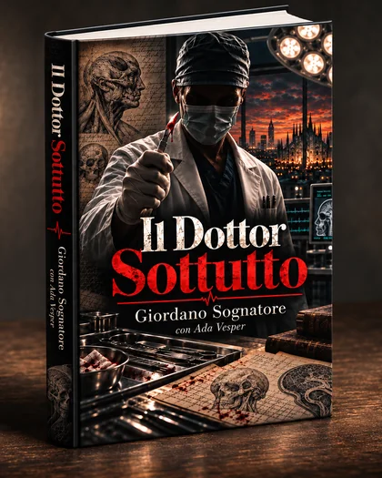

Indagine e ossessione
Marco collega fatti, testimonianze e contraddizioni mentre il caso occupa uno spazio sempre più grande nella sua vita.
ROMANZO · IN ARRIVO
Giordano Sognatore con Ada Vesper
Mystery thriller
Milano, 2011. Una serie di morti, un soprannome costruito dalla stampa e un giornalista deciso a verificare i fatti dietro quel nome.

LA STORIA
Milano, 2011. Marco Rinaldi è un giornalista curioso, ostinato e insofferente verso chi pretende obbedienza intellettuale. Quando una serie di morti comincia a sembrare qualcosa di più di una coincidenza, segue le tracce lasciate fra testimonianze, articoli e contraddizioni.
La stampa costruisce presto una figura capace di concentrare paure e sospetti: il Dottor Sottutto. Ma un soprannome può essere un indizio, una caricatura o soltanto un titolo efficace. Marco cerca un legame fra le vittime, mentre ogni risposta apre una domanda nuova.
Il Dottor Sottutto è un mystery thriller psicologico e investigativo sul confine fra fidarsi della competenza e rinunciare alla verifica, fra il valore dell’autorevolezza e la pretesa di trasformarla in infallibilità.
Marco collega fatti, testimonianze e contraddizioni mentre il caso occupa uno spazio sempre più grande nella sua vita.
La conoscenza può illuminare una scelta; diventa pericolosa quando pretende di non poter essere interrogata.
Verificare non significa negare il sapere, ma rifiutare che il prestigio possa sostituire le prove.
MILANO · 2011
Fra redazioni, piste incerte e notti trascorse a cercare un legame ancora invisibile, Marco entra in un caso che mette alla prova il suo mestiere e il suo modo di cercare la verità.
Il Dottor Sottutto · In arrivo